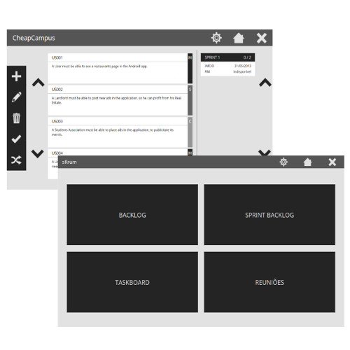
Personal
Hi, my name is Vítor, I'm 23, and I live in a small town called Argoncilhe, 15km away from Porto, Portugal.
After atending high school at Colégio Internato dos Carvalhos, I enrolled the Master in Informatics and Computing Engineering in the Faculty of Engineering of University of Porto (FEUP) in 2009, after a long existential debate about what should I study.
My passion from computers came from the time where I was the designated fixer of everything electronic at my parents house, and, later, when I discovered the videogame world. However, it's kinda funny to say that, as the college years went by, my interests in the computer science area changed quite a bit. I am specially interested in the process of making a software product, so, areas like Software Engineering, Requirements Engineering or Software Arquitectures are my main focus. I also keep under close attention on the Mobile Computing Area, wether software-wise wether hardware-wise.
Curriculum
- 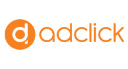August 2014 - Present - Adclick - Web Developer
- 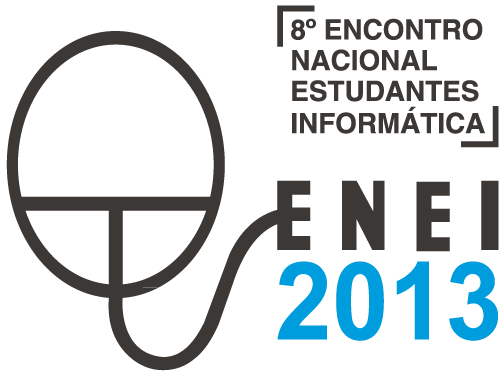2013 - ENEI 2013 Staff Member
- 2013 - Assistant / Activity Monitor at Universidade Junior
Main Skills
Skills
- Php
- Java / C#
- Android
- HTML / CSS
- Software Engineering
- Lean methodologies
Portfolio
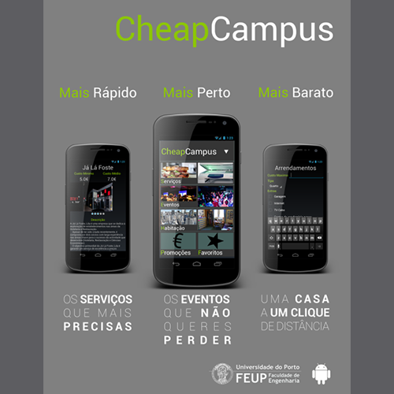
CheapCampus
This project, developed during the Software Development Laboratory (LDSO),was an Android App / Website which intended to provide the students, especially the new students, an easy access to everything their campus had to offer which would be useful to their college lifes. It had a Service search (for restaurants, shops, etc.), an Home Search area, with an Ad creation function, and an Event calendar, which gathered information from student associations and other relevant entities. With this app, the team also wanted to bring some recognition to the local businesses who have less recongnition due to their geographic location.
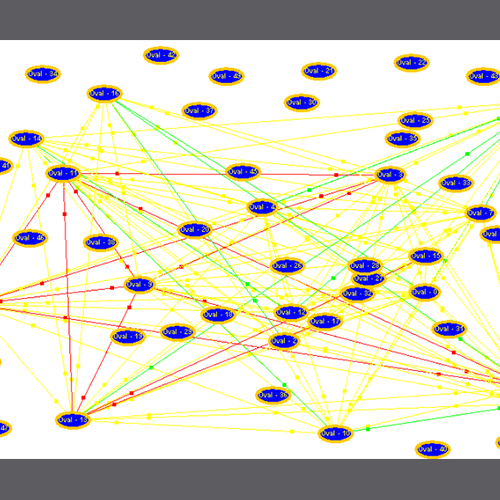
Trust in Social Networks
Built for a Distributed Artificial Intelligence Agents course, this program was a simulation of how the trust between agents evolved in a social network like, in this case, eBay. It was built using Java and the RepastJ framework.
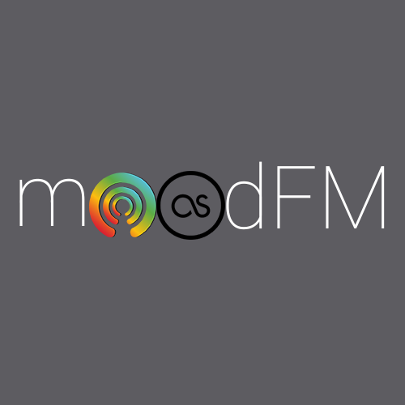
moodFM
Like CheapCampus, moodFM is an Android App, in this case created in the Distributed Systems course. Mixing the Stereomood and LastFM API's, this app was, at the time, innovative, since there was no other Stereomood app. It was also the first time that the dev team contacted with technologies like OAuth and REST.
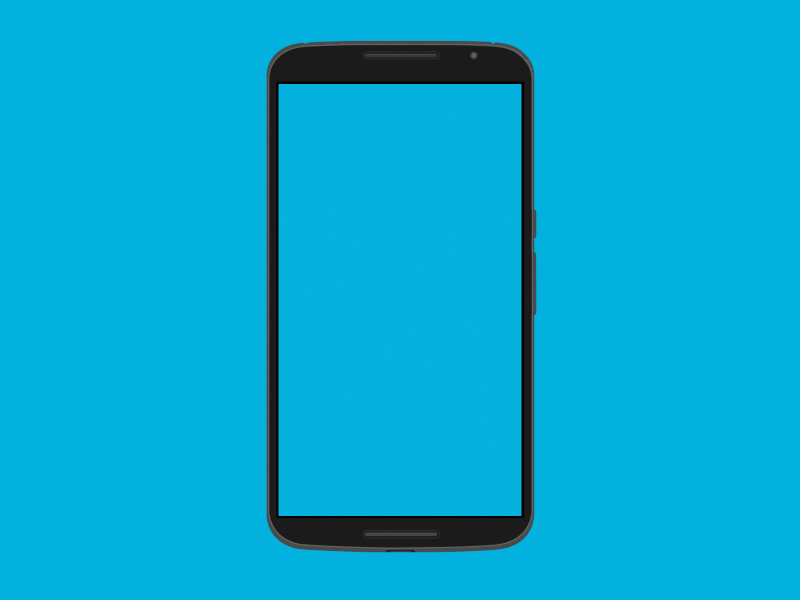
Derivå
A mobile application to change the way we explore a city. More on this one SOON!Hobbies
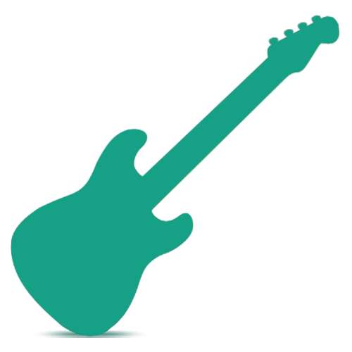
 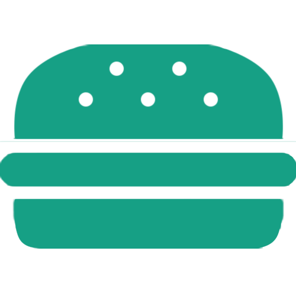
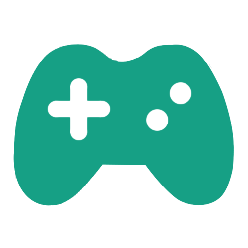
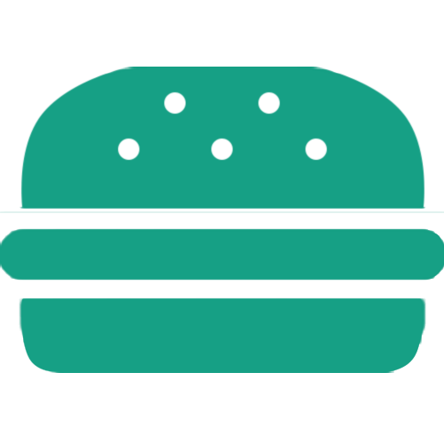
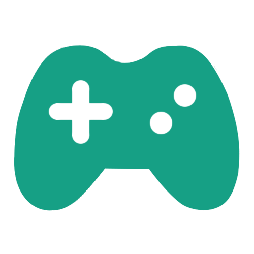
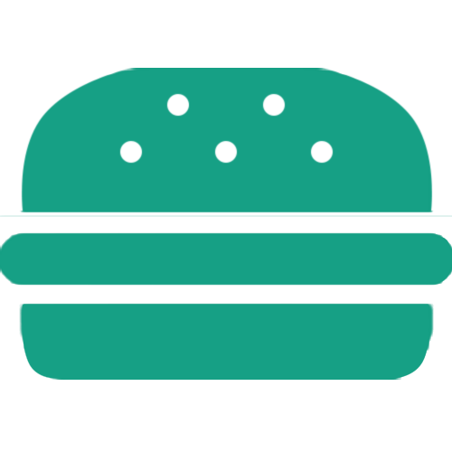
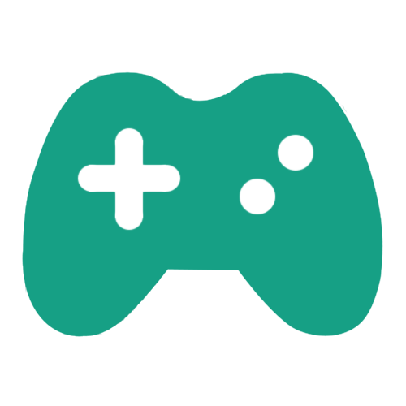